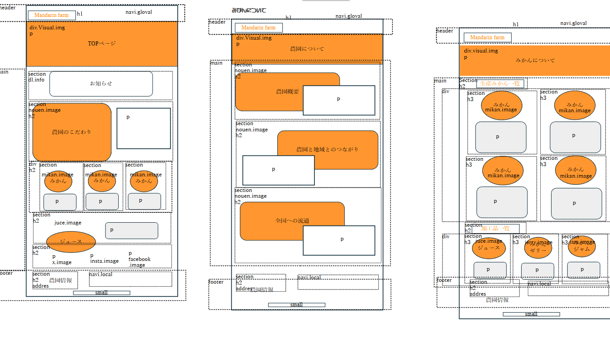
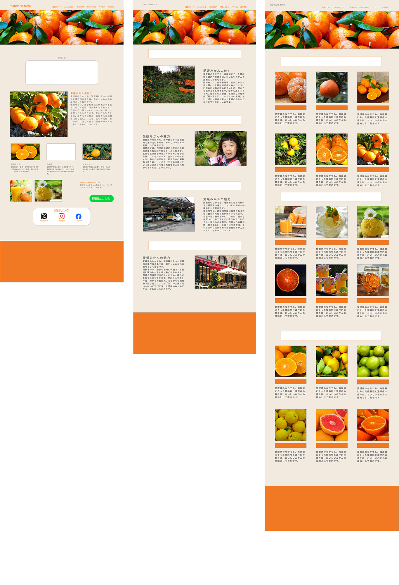

「orenge farm」という架空のみかん農園会社を制作。コンセプト、ペルソナ設定からコーディングまでの一連の作業をすべて担当しました。愛媛県産のみかんの魅力を伝えつつ、農園に興味を持ってもらえるようなをサイトをデザインしました。
URL
サイトの目的
農園の来園者及びオンラインでの問い合わせの増加
ターゲット
30代前半男性、東京都内の転勤で引越予定
引越に慣れており、必要最低限のサービスを希望している
デザインについて
愛媛県のみかんをイメージしてオレンジ（#）をメインカラーに使用しています。ベースカラーも真っ白ではなく何色（#）を使うことで温かみや好感を持っていただけるように意識しています。書体や枠線はみかんの丸い形をイメージして丸みを帯びたデザインで統一しています。
コーディングについて
授業で学んだHTMLのタグの入れ子のルールなど基本的なことを守りながら、正確なマークアップを心掛けました。そして、サイトのコンセプトを意識しながらCSSで飾りつけの部分を仕上げていきました。
みかんの品種紹介ページは、ul、liを使用して均等に整列してをデザインで表現しました。
余白を均等にそろえたデザインにすることで全体的にまとまりのあるデザインとなるように意識しました。
担当
コンセプト立案（10時間）、ペルソナ設定（4時間）、サイトマップ制作（2時間）、ワイヤーフレーム制作（20時間）、デザイン・コーディング（50時間）
使用ソフト
XD、Photoshop、Visual Studio Code
XDデザインカンプ
コンセプト立案・ペルソナ設定後、オフィスソフトでワイヤーフレームの作成、XDを使用してデザインカンプを制作しました。ワイヤーフレームを制作後、素材を収集、テキストの準備を行い、カラーでデザインを構築しました。カラー版では収集した画像を素材に合わせてデザインに変更を加え、臨機応変に対応しました。
[ワイヤーフレーム]
[デザインカンプ]